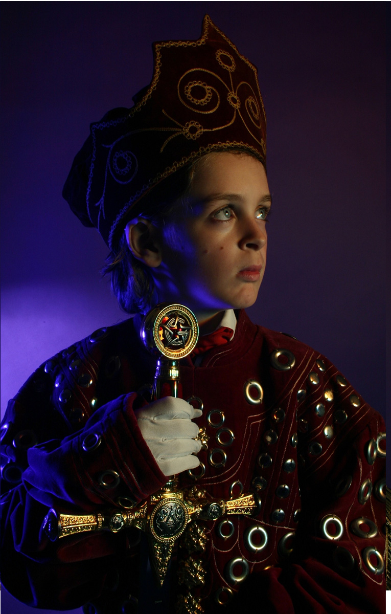

Exhibitions
The ADAM and RON Show, Elms Lesters Painting Rooms, London, United Kingdom, May 4–31, 2008.
Literature
Ron English, Fauxlosophy: The Art of Ron English (San Francisco: Last Gasp, 2008), p. 172. ISBN 978-0867196566.

The ADAM and RON Show, Elms Lesters Painting Rooms, London, United Kingdom, May 4–31, 2008.
Ron English, Fauxlosophy: The Art of Ron English (San Francisco: Last Gasp, 2008), p. 172. ISBN 978-0867196566.
